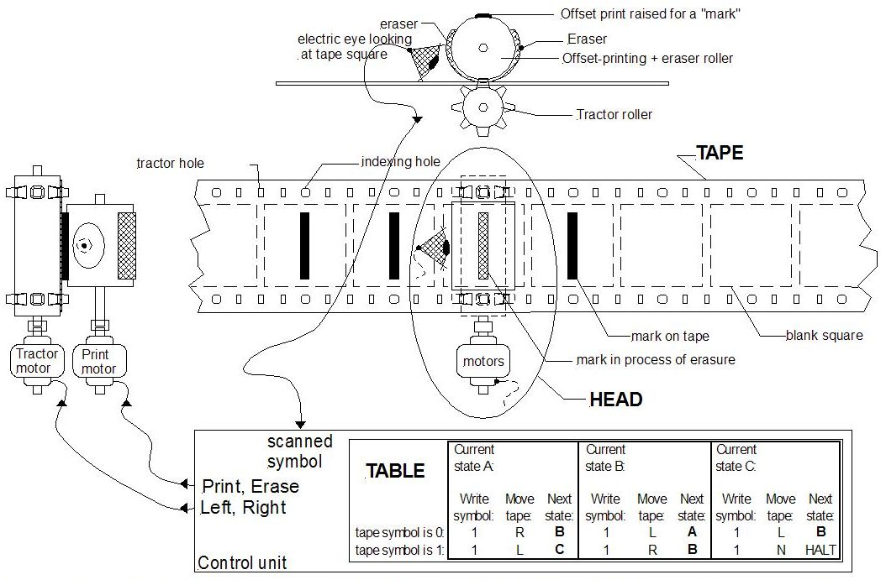

Selon la
page Wikipédia sur le sujet, l'informatique est un domaine d'activité concernant le
traitement automatique de l'information numérique grâce à
des programmes informatiques par des machines (systèmes
embarqués, ordinateurs, robots, automates...).
Il est
l'association du nom "information" avec le suffixe "ique"
qui signifie "qui est propre à". C'est en 1957 que le terme
est créé par Karl Steinbuch, un ingénieur allemand, qui
intitule alors son essai "Informatik : Automastiche
Informationsverarbeitung" ce qui pourrait se traduire par
"Informatique : traitement automatique de l'information".
C'est en mars 1962 qu'il est utilisé pour la première fois
en France, pour le nom d'une société "Société d'informatique
appliquée" créée par Philippe Dreyfus. L'Académie Française
définit ce mot comme la "science du traitement de
l'information" durant l'année 1966. L'informatique moderne
naît peu avant la Seconde Guerre Mondiale, quand Alan Turing
théorise la notion d'ordinateur avec son concept de machine
de Turing. En voici un exemple :

1
Après la Seconde Guerre Mondiale, l'invention du transistor
puis plus tard du circuit intégré permettra de remplacer les
relais et les tubes à vide, qui étaient plus gros, plus
chers et moins fiables car les ampoules contenues dans les
circuits grillaient souvent. Avec Von Neumann, les
ordinateurs peuvent supporter des opérations plus complexes
que le calcul, comme par exemple les algorithmes. C'est dans
les années 1970 que se développent les télécommunications
avec le réseau Cyclades rapidement abandonné, Arpanet qui
est "l'ancêtre" d'Internet et les protocoles TCP-IP encore
utilisés aujourd'hui.
L'informatique possède de nombreuses branches, comme
l'algorithmique (un algorithme est une façon de procéder
pour arriver à un résultat), la cryptologie (science des
messages secrets / des cryptogrammes).
Il existe
aujourd'hui un multitude d'appareils informatiques parmi
lesquels une console de jeu, un NAS (apparil dont la
fonction est de garder des informations en mémoire et des
les mettre à disposition à travers un réseau informatique),
un GPS, un robot et bien d'autres encore...